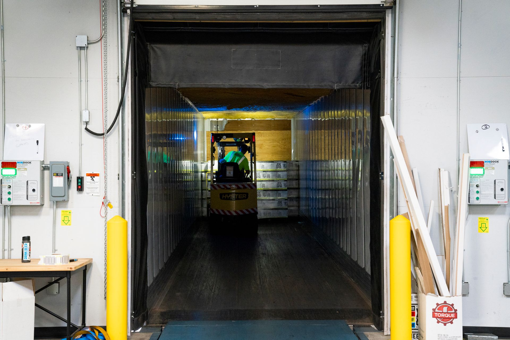

Signature · The descent
The door
Twenty-two stone steps below Cihangir. The street noise stops at the fourth.
The list
By the glass,
this week.
White & orange
- Narince, Tokat2022
- Chenin Blanc, Loire2021
- Kalecik skin-contact, Ankara2022
Red
- Öküzgözü, Elazığ2020
- Nebbiolo, Langhe2016
- Rioja Gran Reserva2009
Old bottles
- Boğazkere, Diyarbakır2005
- Bordeaux, Pauillac1998
- The house's oldest, ask us1994
Eight small plates, no kitchen noise. The list changes when a bottle runs out.
Reserve
A table below the street.
Cihangir, İstanbul · Tue – Sun from 18:00 · info@izdencreative.com
Velvet is a fictional cellar bar created as a design demonstration by İzden Creative.